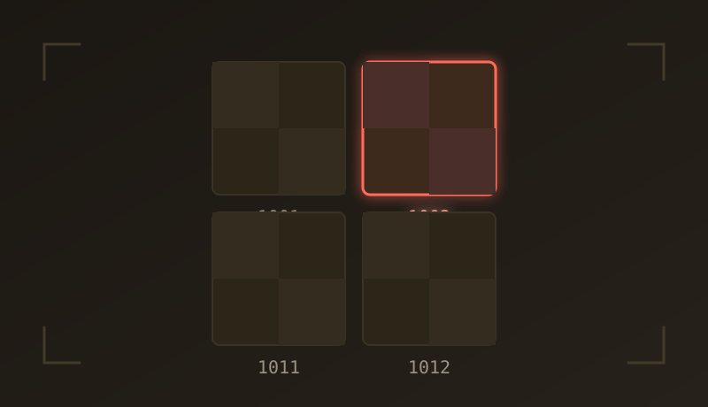

UDIM Preview Generator
Generate previews for every UDIM texture in a Maya scene with one click.

I'm AJOY — a 3D animator and rigger. When production friction gets in the way of the work, I write a small Maya tool to get rid of it.
Small, focused utilities for the everyday snags in a production pipeline, grouped by the app they run in.
Generate previews for every UDIM texture in a Maya scene with one click.

Return to your last saved Maya scene quickly, while restoring useful scene state.

Pin locators to polygon or NURBS surfaces for quick, stable surface attachments.
// turn friction into something you can fix in a few clicks
Most of these start as a real production annoyance — repetitive setup, scene management, or surface work that takes longer than it should. The goal isn't more software. It's fewer interruptions.
I'm AJOY, a 3D animator and rigger interested in animation, rigging, and the technical side of production.
This site is where I share the work I make, the tools I release, and the experiments I'm exploring.